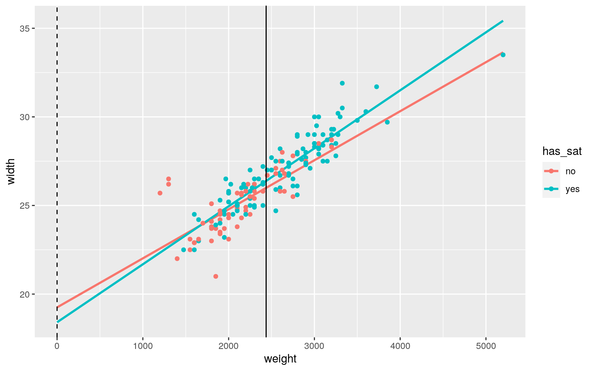

January 1, 0001
Modeling
Instructions
A knitted R Markdown document (preferably HTML) and the raw R Markdown file (as .Rmd) should both be submitted to Canvas by 11:59pm on the due date. These two documents will be graded jointly, so they must be consistent (i.e., don’t change the R Markdown file without also updating the knitted document). In the .Rmd file for Project 2, you can copy the first code-chunk into your project .Rmd file to get better formatting. Notice that you can adjust the opts_chunk$set(…) above to set certain parameters if necessary to make the knitting cleaner (you can globally set the size of all plots, etc). You can copy the set-up chunk in Project2.Rmd: I have gone ahead and set a few for you (such as disabling warnings and package-loading messges when knitting)!
Like before, I envision your written text forming something of a narrative structure around your code/output. All results presented must have corresponding code. Any answers/results/plots etc. given without the corresponding R code that generated the result will not be graded. Furthermore, all code contained in our project document should work properly. Please do not include any extraneous code or code which produces error messages. (Code which produces warnings is fine as long as you understand what the warnings mean.)
Find data:
Find one dataset with at least 5 variables (ideally more!) that you want to use to build models/test hypotheses. At least onez should be categorical (with 2-5 groups, ideally; definitely fewer than 10) and at least two should be numeric (taking on more than 10 distinct values). Ideally, at least of your variables will be binary (if not, you will have to create one by discretizing a numeric or collapsing levels of a categorical). You will need a minimum of 40 observations (at least 10 observations for every explanatory variable you have, ideally 20+ observations/variable).
It is perfectly fine to use either dataset (or the merged dataset, or a subset of your variables) from Project 1. However, I might encourage you to diversify things a bit and choose a different dataset to work with (particularly if the variables did not reveal interesting associations in Project 1 that you want to follow up with). The only requirement/restriction is that you may not use data from any examples we have done in class or lab. It would be a good idea to pick more cohesive data this time around (i.e., variables that you actually thing might have a relationship you would want to test). Think more along the lines of your Biostats project.
Again, you can use data from anywhere you want (see bottom for resources)! If you want a quick way to see whether a built-in (R) dataset has binary and/or character (i.e., categorical) variables, check out this list: https://vincentarelbundock.github.io/Rdatasets/datasets.html.
Guidelines and Rubric
- 0. (5 pts) Introduce your dataset and each of your variables (or just your main variables if you have lots) in a paragraph. What are they measuring? How many observations?
This dataset involves information on female crabs and whether they will have male crabs acting as satellites around them. The variables color and spine are categorical variables that determine the color and type of spine that the female crabs will have. The width and weight variables are numeric variables that are measured in cm and grams, respectively. The satell variable reports the number of satellite crabs around the female crab and the y variable is a binary variable that explains whether the female crab has satellites or not. There are 173 female crabs being measured.
- 1. (15 pts) Perform a MANOVA testing whether any of your numeric variables (or a subset of them, if including them all is unreasonable or doesn’t make sense) show a mean difference across levels of one of your categorical variables (3). If they do, perform univariate ANOVAs to find response(s) showing a mean difference across groups (3), and perform post-hoc t tests to find which groups differ (3). Discuss the number of tests you have performed, calculate the probability of at least one type I error (if unadjusted), and adjust the significance level accordingly (bonferroni correction) before discussing significant differences (3). Briefly discuss some of the MANOVA assumptions and whether or not they are likely to have been met here (no need for anything too in-depth) (2).
library(lmtest)
library(dplyr)
library(plotROC)
data <- read.csv('horseshoecrab.csv')
data$has_sat <- ifelse(data$y == 1, 'yes', 'no')
crab_manova <- manova(cbind(weight, width)~ has_sat, data = data)
summary(crab_manova)## Df Pillai approx F num Df den Df Pr(>F)
## has_sat 1 0.16569 16.88 2 170 2.056e-07 ***
## Residuals 171
## ---
## Signif. codes: 0 '***' 0.001 '**' 0.01 '*' 0.05 '.' 0.1
' ' 1summary.aov(crab_manova)## Response weight :
## Df Sum Sq Mean Sq F value Pr(>F)
## has_sat 1 8585671 8585671 30.157 1.421e-07 ***
## Residuals 171 48683122 284697
## ---
## Signif. codes: 0 '***' 0.001 '**' 0.01 '*' 0.05 '.' 0.1
' ' 1
##
## Response width :
## Df Sum Sq Mean Sq F value Pr(>F)
## has_sat 1 123.28 123.276 32.845 4.415e-08 ***
## Residuals 171 641.80 3.753
## ---
## Signif. codes: 0 '***' 0.001 '**' 0.01 '*' 0.05 '.' 0.1
' ' 1pairwise.t.test(data$weight, data$has_sat, p.adj="none")##
## Pairwise comparisons using t tests with pooled SD
##
## data: data$weight and data$has_sat
##
## no
## yes 1.4e-07
##
## P value adjustment method: nonepairwise.t.test(data$width, data$has_sat, p.adj="none")##
## Pairwise comparisons using t tests with pooled SD
##
## data: data$width and data$has_sat
##
## no
## yes 4.4e-08
##
## P value adjustment method: nonealpha <- .05 / 5
alpha## [1] 0.01library(rstatix)
ggplot(data, aes(x = width, y = weight)) +
geom_point(alpha = .5) + geom_density_2d() + facet_wrap(~has_sat)group <- data$has_sat
DVs <- data %>% select(weight, width)
sapply(split(DVs,group), mshapiro_test)## no yes
## statistic 0.785857 0.9317528
## p.value 4.222585e-08 2.535145e-05box_m(DVs, group)## # A tibble: 1 x 4
## statistic p.value parameter method
## <dbl> <dbl> <dbl> <chr>
## 1 12.9 0.00483 3 Box's M-test for Homogeneity of
Covariance MatricesI performed 5 tests in all - one manova, 2 one-way anovas, and 2 pairwise t-tests. I initally set alpha to be .05, and it was reduced to .01 after the Bonferroni correction. Based on the manova test, I found a significant difference in mean for either weight or width based on whether the crabs had satellites. Both weight and width were found to be significantly different based on the existence of a satellite crab.
After running a shapiro test on the groups, it appears that the multivariate normality assumption may be violated, though the density plots do not look too far off. In addition, the BoxM test implied that the assumption of homogeneity of variance-covariance matrices could also be violated. There do appear to be some outliers in the data as well, implying that MANOVA may not have been an appropriate analysis technique.
- 2. (10 pts) Perform some kind of randomization test on your data (that makes sense). The statistic can be anything you want (mean difference, correlation, F-statistic/ANOVA, chi-squared), etc. State null and alternative hypotheses, perform the test, and interpret the results (7). Create a plot visualizing the null distribution and the test statistic (3).
mean(data$weight[data$has_sat == 'yes']) - mean(data$weight[data$has_sat == 'no'])## [1] 464.5718rand_dist<-vector()
for(i in 1:5000){
new<-data.frame(weight=sample(data$weight),has_sat=data$has_sat)
rand_dist[i]<-mean(new[new$has_sat=="yes",]$weight)-
mean(new[new$has_sat=="no",]$weight)}
mean(rand_dist> 464.5718 | rand_dist < -464.5718)## [1] 0{hist(rand_dist,main="",ylab="", xlim = c(-500, 500)); abline(v = c(-464.5718, 464.5718),col="red")}
I performed a randomization test on the mean difference in weight based on whether the crabs had a satellite. Ho: Mean weight is the same for whether the crab has satellites or not Ha: Mean weight differs for crabs that have satellite crabs and crabs that don’t have satellites.
It appears that there is a significant difference in the mean weight of crabs that do have satellites and crabs that do not based on my p-value that is approximately 0.
3. (40 pts) Build a linear regression model predicting one of your response variables from at least 2 other variables, including their interaction. Mean-center any numeric variables involved in the interaction.
- Interpret the coefficient estimates (do not discuss significance) (10)
- Plot the regression using
ggplot()using geom_smooth(method=“lm”). If your interaction is numeric by numeric, refer to code in the slides to make the plot or check out theinteractionspackage, which makes this easier. If you have 3 or more predictors, just chose two of them to plot for convenience. (10) - What proportion of the variation in the outcome does your model explain? (4)
- Check assumptions of linearity, normality, and homoskedasticity either graphically or using a hypothesis test (5)
- Regardless, recompute regression results with robust standard errors via
coeftest(..., vcov=vcovHC(...)). Discuss significance of results, including any changes from before/after robust SEs if applicable. (10)
data$weight_c <- data$weight - mean(data$weight)
crab_lm <- lm(width ~ has_sat * weight_c, data = data)
summary(crab_lm)##
## Call:
## lm(formula = width ~ has_sat * weight_c, data = data)
##
## Residuals:
## Min 1Q Median 3Q Max
## -3.3693 -0.6180 -0.0077 0.5548 3.6527
##
## Coefficients:
## Estimate Std. Error t value Pr(>|t|)
## (Intercept) 2.599e+01 1.478e-01 175.875 <2e-16 ***
## has_satyes 3.907e-01 1.760e-01 2.220 0.0278 *
## weight_c 2.767e-03 2.760e-04 10.025 <2e-16 ***
## has_satyes:weight_c 5.049e-04 3.192e-04 1.582 0.1155
## ---
## Signif. codes: 0 '***' 0.001 '**' 0.01 '*' 0.05 '.' 0.1
' ' 1
##
## Residual standard error: 0.9667 on 169 degrees of
freedom
## Multiple R-squared: 0.7936, Adjusted R-squared: 0.7899
## F-statistic: 216.5 on 3 and 169 DF, p-value: < 2.2e-16crab_lm$coefficients[2] + crab_lm$coefficients[4]## has_satyes
## 0.3912186crab_lm$coefficients[3] + crab_lm$coefficients[4]## weight_c
## 0.003272178ggplot(data, aes(weight,width, color = has_sat)) + geom_smooth(aes(group=data$has_sat), method = "lm", se = F, fullrange = T) +
geom_point()+geom_vline(xintercept=0,lty=2)+geom_vline(xintercept=mean(data$weight))
resids<-crab_lm$residuals
fitvals<-crab_lm$fitted.values
ggplot()+geom_point(aes(fitvals,resids))+geom_hline(yintercept=0, col="red")qqnorm(resids)
qqline(resids)library(sandwich)
coeftest(crab_lm, vcov = vcovHC(crab_lm))[,1:2] ## Estimate Std. Error
## (Intercept) 2.599422e+01 0.1233518818
## has_satyes 3.907137e-01 0.1474365357
## weight_c 2.767275e-03 0.0005008621
## has_satyes:weight_c 5.049035e-04 0.0005459352The intercept is difficult to interpret, as it is not possible for a crab to have 0 weight.
While controling for weight, a crab that has a satellite is predicted to be .3912186 cm wider than a crab that does not have a satellite.
While controlling for whether a crab has a satellite, for every increase in 1 gram of weight, the width will be expected to increase by .003272178 cm.
The model explains 78.99% of the variablility in the data.
Based on the residual plot, the data appears to be linear and homoskedatic, as the points surrounding the line at 0 seem to have equal spread and continue forward in a linear fashion.
The data appears to be somewhat normal, as the qqplot shows that much of the data follows the qqplot. However, there is a large degree of spread for the points of data far from the mean.
The robust standard errors are very similar to the standard errors from the linear regression model, as the data is roughly homoskedastic.
- 4. (5 pts) Rerun same regression model (with the interaction), but this time compute bootstrapped standard errors (either by resampling observations or residuals). Discuss any changes you observe in SEs and p-values using these SEs compared to the original SEs and the robust SEs)
samp_distn<-replicate(5000, {
boot_dat<-data[sample(nrow(data),replace=TRUE),]
fit<-lm(width ~ has_sat * weight_c, data = boot_dat)
coef(fit)
})
## Estimated SEs
samp_distn%>%t%>%as.data.frame %>%summarize_all(sd)## (Intercept) has_satyes weight_c has_satyes:weight_c
## 1 0.1290908 0.1514385 0.0004806072 0.0005139229The bootstrap standard errors are very similar to both the standard errors calculated using a linear model and the robust standard errors, implying that p-values will be approximately the same.
5. (30 pts) Fit a logistic regression model predicting a binary variable (if you don’t have one, make/get one) from at least two explanatory variables (interaction not necessary).
- Interpret coefficient estimates in context (10)
- Report a confusion matrix for your logistic regression (5)
- Compute and discuss the Accuracy, Sensitivity (TPR), Specificity (TNR), Precision (PPV), and AUC of your model (5)
- Using ggplot, make a density plot of the log-odds (logit) colored/grouped by your binary outcome variable (5)
- Generate an ROC curve (plot) and calculate AUC (either manually or with a package); interpret (5)
crab_log <- glm(y ~ width + weight, data = data, family = binomial)
summary(crab_log)##
## Call:
## glm(formula = y ~ width + weight, family = binomial,
data = data)
##
## Deviance Residuals:
## Min 1Q Median 3Q Max
## -2.1127 -1.0344 0.5304 0.9006 1.7207
##
## Coefficients:
## Estimate Std. Error z value Pr(>|z|)
## (Intercept) -9.3547261 3.5280465 -2.652 0.00801 **
## width 0.3067892 0.1819473 1.686 0.09177 .
## weight 0.0008338 0.0006716 1.241 0.21445
## ---
## Signif. codes: 0 '***' 0.001 '**' 0.01 '*' 0.05 '.' 0.1
' ' 1
##
## (Dispersion parameter for binomial family taken to be 1)
##
## Null deviance: 225.76 on 172 degrees of freedom
## Residual deviance: 192.89 on 170 degrees of freedom
## AIC: 198.89
##
## Number of Fisher Scoring iterations: 4exp(crab_log$coefficients[2])## width
## 1.359054exp(crab_log$coefficients[3])## weight
## 1.000834probabilities = predict(crab_log, type = "response")
table(actual = data$y, predicted = as.numeric(probabilities > 0.5))## predicted
## actual 0 1
## 0 28 34
## 1 16 95print("Accuracy")## [1] "Accuracy"123 / 173## [1] 0.7109827print("Sensitivity")## [1] "Sensitivity"95 / 111## [1] 0.8558559print("Specificity")## [1] "Specificity"28 / 62## [1] 0.4516129myplot <- ggplot(data) + geom_roc(aes(d = y, m = probabilities))
print("AUC")## [1] "AUC"calc_auc(myplot)## PANEL group AUC
## 1 1 -1 0.7493461data$logit <- predict(crab_log, type = "link")
data %>% ggplot() + geom_density(aes(logit, color=has_sat, fill=has_sat), alpha = .4) + theme(legend.position=c(.85,.85))+geom_vline(xintercept=0)+xlab("logit (log-odds)")myplotWhile controlling for weight, for every increase in 1 cm of the shell width the odds of a female crab having a satellite crab increases multiplicatvely by 1.314232.
While controlling for shell width, for every increase in 1 gram of the weight of the crab the odds of a femable crab having a satellite crab increases multiplicatively by 1.000795.
The model predicts 71.09827% of the crabs correctly for whether they will have a satellite crab.
The model correctly predicts positive results for a crab having satellite crabs 85.58559% of the time.
The model correctly predicts negative results for a crab having satellite crabs 45.16129% of the time.
The area under the curve for the ROC plot is .7493461, implying that the model is a fair classifier.
6. (25 pts) Perform a logistic regression predicting the same binary response variable from ALL of the rest of your variables (the more, the better!)
- Fit model, compute in-sample classification diagnostics (Accuracy, Sensitivity, Specificity, Precision, AUC), and interpret (5)
- Perform 10-fold (or repeated random sub-sampling) CV with the same model and report average out-of-sample classification diagnostics (Accuracy, Sensitivity, Specificity, Precision, and AUC); interpret AUC and compare with the in-sample metrics (10)
- Perform LASSO on the same model/variables. Choose lambda to give the simplest model whose accuracy is near that of the best (i.e.,
lambda.1se). Discuss which variables are retained. (5) - Perform 10-fold CV using only the variables lasso selected: compare model’s out-of-sample AUC to that of your logistic regressions above (5)
crab_log <- glm(y ~ width + weight + color + spine, data = data, family = binomial)
probabilities = predict(crab_log, type = "response")
table(actual = data$y, predicted = as.numeric(probabilities > 0.5))## predicted
## actual 0 1
## 0 31 31
## 1 16 95print("Accuracy")## [1] "Accuracy"126 / 173## [1] 0.7283237print("Sensitivity")## [1] "Sensitivity"95 / 111## [1] 0.8558559print("Specificity")## [1] "Specificity"31 / 62## [1] 0.5myplot <- ggplot(data) + geom_roc(aes(d = y, m = probabilities))
print("AUC")## [1] "AUC"calc_auc(myplot)## PANEL group AUC
## 1 1 -1 0.770125library(pROC)
class_diag <- function(probs,truth){
if(is.character(truth)==TRUE) truth<-as.factor(truth)
if(is.numeric(truth)==FALSE & is.logical(truth)==FALSE) truth<-as.numeric(truth)-1
tab<-table(factor(probs>.5,levels=c("FALSE","TRUE")),factor(truth, levels=c(0,1)))
acc=sum(diag(tab))/sum(tab)
sens=tab[2,2]/colSums(tab)[2]
spec=tab[1,1]/colSums(tab)[1]
ppv=tab[2,2]/rowSums(tab)[2]
f1=2*(sens*ppv)/(sens+ppv)
#CALCULATE EXACT AUC
ord<-order(probs, decreasing=TRUE)
probs <- probs[ord]; truth <- truth[ord]
TPR=cumsum(truth)/max(1,sum(truth))
FPR=cumsum(!truth)/max(1,sum(!truth))
dup<-c(probs[-1]>=probs[-length(probs)], FALSE)
TPR<-c(0,TPR[!dup],1); FPR<-c(0,FPR[!dup],1)
n <- length(TPR)
auc<- sum( ((TPR[-1]+TPR[-n])/2) * (FPR[-1]-FPR[-n]) )
data.frame(acc,sens,spec,ppv,f1,auc)}
k=10 #choose number of folds
data2<-data[sample(nrow(data)),] #randomly order rows
folds<-cut(seq(1:nrow(data)),breaks=k,labels=F) #create folds
diags<-NULL
for(i in 1:k){
## Create training and test sets
train<-data2[folds!=i,]
test<-data2[folds==i,]
truth<-test$y ## Truth labels for fold i
## Train model on training set (all but fold i)
fit<-glm(y ~ width + weight + color + spine, data = data, family = binomial)
## Test model on test set (fold i)
probs<-predict(fit,newdata = test,type="response")
## Get diagnostics for fold i
diags<-rbind(diags,class_diag(probs,truth))
}
summarize_all(diags,mean)## acc sens spec ppv f1 auc
## 1 0.7287582 0.8572439 0.4833333 0.752634 0.7969256
0.7468543X = model.matrix(y~width + weight + color + spine, data)[,-1]
y = data$y
library(glmnet)
cv<-cv.glmnet(X,y,family="binomial")
lasso<-glmnet(X,y,family="binomial",lambda=cv$lambda.1se)
coef(lasso)## 5 x 1 sparse Matrix of class "dgCMatrix"
## s0
## (Intercept) -3.190182e+00
## width 1.377536e-01
## weight 6.776028e-05
## color .
## spine .k=10 #choose number of folds
data2<-data[sample(nrow(data)),] #randomly order rows
folds<-cut(seq(1:nrow(data)),breaks=k,labels=F) #create folds
diags<-NULL
for(i in 1:k){
## Create training and test sets
train<-data2[folds!=i,]
test<-data2[folds==i,]
truth<-test$y ## Truth labels for fold i
## Train model on training set (all but fold i)
fit<-glm(y ~ width + weight + color, data = data, family = binomial)
## Test model on test set (fold i)
probs<-predict(fit,newdata = test,type="response")
## Get diagnostics for fold i
diags<-rbind(diags,class_diag(probs,truth))
}
summarize_all(diags,mean)## acc sens spec ppv f1 auc
## 1 0.7166667 0.8578419 0.489127 0.7498035 0.7920776
0.7927127The initial model predicts 72.83237% of the crabs correctly for whether they will have a satellite crab.
The initial model correctly predicts positive results for a crab having satellite crabs 85.58559% of the time.
The initial model correctly predicts negative results for a crab having satellite crabs 50% of the time.
The area under the curve for the ROC plot with the initial model is .770125, implying that our model is a fair classifier.
The area under the curve for the new ROC plot based on one rendition of 10-fold cross validation is .777793, implying that our model is a fair classifer and is similar quality to the previous model.
For the lasso model, the width, weight, and color are retained for classifying whether a crab will have a satellite crab.
The new area under the curve with the new model is .7634173 based on one rendition of 10-fold cross validation, which is less than that of the previous model. However, the values are very similar so the classifiers are of similar quality.
Where do I find data again?
You can choose ANY datasets you want that meet the above criteria for variables and observations. You can make it as serious as you want, or not, but keep in mind that you will be incorporating this project into a portfolio webpage for your final in this course, so choose something that really reflects who you are, or something that you feel will advance you in the direction you hope to move career-wise, or something that you think is really neat, or whatever. On the flip side, regardless of what you pick, you will be performing all the same tasks, so it doesn’t end up being that big of a deal.
If you are totally clueless and have no direction at all, log into the server and type
data(package = .packages(all.available = TRUE))This will print out a list of ALL datasets in ALL packages installed on the server (a ton)! Scroll until your eyes bleed! Actually, do not scroll that much… To start with something more manageable, just run the command on your own computer, or just run data() to bring up the datasets in your current environment. To read more about a dataset, do ?packagename::datasetname.
If it is easier for you, and in case you don’t have many packages installed, a list of R datasets from a few common packages (also downloadable in CSV format) is given at the following website: https://vincentarelbundock.github.io/Rdatasets/datasets.html.
A good package to download for fun/relevant data is
fivethiryeight. Runinstall.packages("fivethirtyeight"),load the packages withlibrary(fivethirtyeight), rundata(), and then scroll down to view the datasets. Here is an online list of all 127 datasets (with links to the 538 articles). Lots of sports, politics, current events, etc.If you have already started to specialize (e.g., ecology, epidemiology) you might look at discipline-specific R packages (vegan, epi, respectively). We will be using some tools from these packages later in the course, but they come with lots of data too, which you can explore according to the directions above
However, you emphatically DO NOT have to use datasets available via R packages! In fact, I would much prefer it if you found the data from completely separate sources and brought them together (a much more realistic experience in the real world)! You can even reuse data from your SDS328M project, provided it shares a variable in common with other data which allows you to merge the two together (e.g., if you still had the timestamp, you could look up the weather that day: https://www.wunderground.com/history/). If you work in a research lab or have access to old data, you could potentially merge it with new data from your lab!
Here is a curated list of interesting datasets (read-only spreadsheet format): https://docs.google.com/spreadsheets/d/1wZhPLMCHKJvwOkP4juclhjFgqIY8fQFMemwKL2c64vk/edit
Here is another great compilation of datasets: https://github.com/rfordatascience/tidytuesday
Here is the UCI Machine Learning Repository: https://archive.ics.uci.edu/ml/index.php
Here is another good general place to look: https://www.kaggle.com/datasets
To help narrow your search down or to see interesting variable ideas, check out https://www.tylervigen.com/spurious-correlations. This is the spurious correlations website, and it is fun, but if you look at the bottom of each plot you will see sources for the data. This is a good place to find very general data (or at least get a sense of where you can scrape data together from)!
If you are interested in medical data, check out www.countyhealthrankings.org
If you are interested in scraping UT data, they make loads of data public (e.g., beyond just professor CVs and syllabi). Check out all the data that is available in the statistical handbooks: https://reports.utexas.edu/statistical-handbook
Broader data sources:
Data.gov 186,000+ datasets!
Social Explorer is a nice interface to Census and American Community Survey data (more user-friendly than the government sites). May need to sign up for a free trial.
U.S. Bureau of Labor Statistics
Gapminder, data about the world.
…